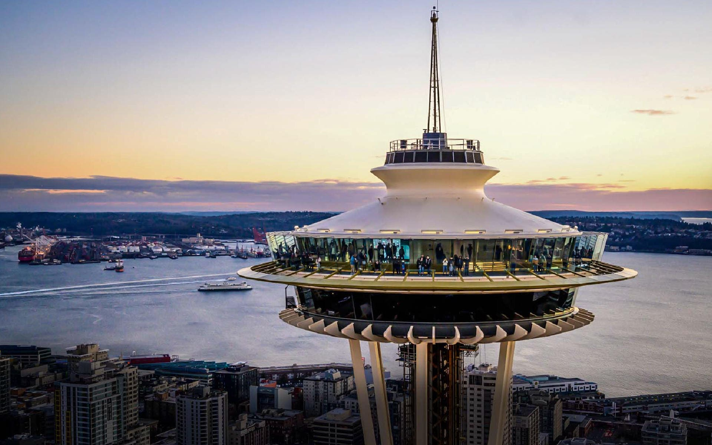
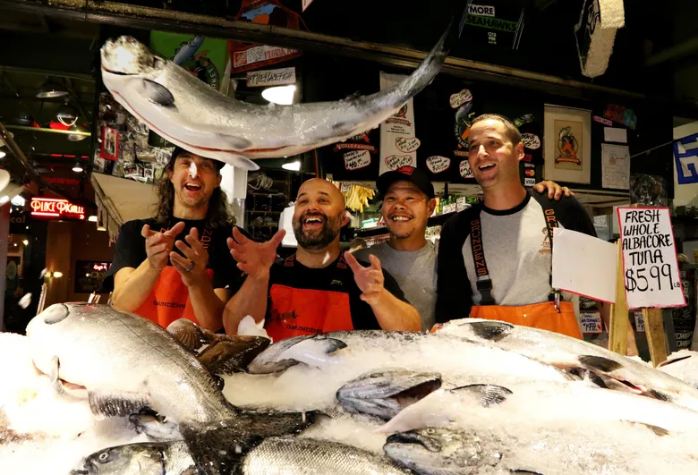
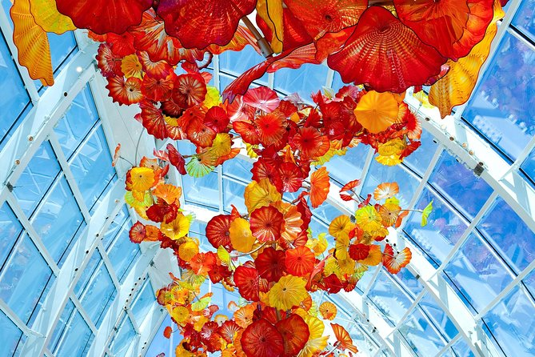
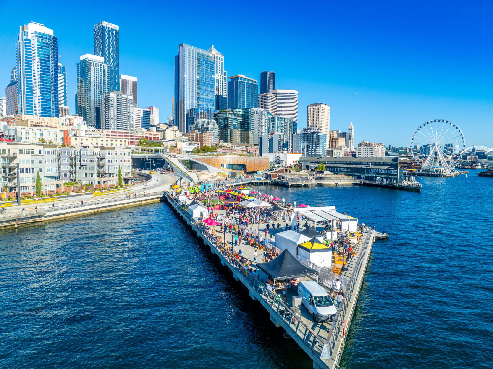

Space Needle
Seattle's most iconic landmark offering 360-degree views from 520 feet above the city. Built for the 1962 World's Fair, this observation tower is a must-see attraction.
Address: 400 Broad St, Seattle, WA 98109
Visit
Seattle's most iconic landmark offering 360-degree views from 520 feet above the city. Built for the 1962 World's Fair, this observation tower is a must-see attraction.
Address: 400 Broad St, Seattle, WA 98109
Visit
One of the oldest continuously operated public farmers' markets in the United States. Watch fish fly, explore local crafts, and experience the heart of Seattle culture.
Address: 85 Pike St, Seattle, WA 98101
Visit
Stunning exhibition showcasing the work of glass artist Dale Chihuly. Marvel at breathtaking glass sculptures in indoor galleries and a lush garden setting.
Address: 305 Harrison St, Seattle, WA 98109
Visit
Scenic waterfront featuring piers, seafood restaurants, shops, and the Seattle Great Wheel. Perfect for strolling, dining, and enjoying Puget Sound views.
Address: Alaskan Way, Seattle, WA 98101
Visit